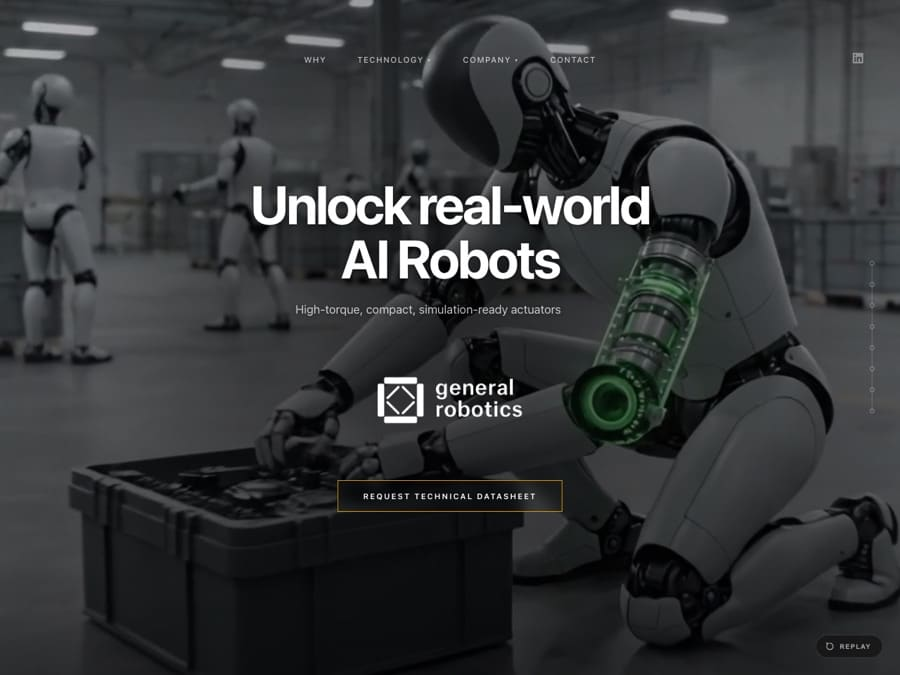

General Robotics
De la robotique et de l’intelligence artificielle, un public international, et un sujet que le visiteur ne comprend pas forcément avant d’arriver sur la page. Un site en anglais, monté entre Toulouse et Boston sans que personne ne prenne l’avion.
- Client
- General Robotics
- Secteur
- Robotique et intelligence artificielle
- Lieu
- Boston et Toulouse
- Année
- 2026
- Langue
- Anglais
- Organisation
- 100 % à distance
- Prestation
- Site vitrine en anglais, direction artistique
- En ligne
- general-robotics.com ↗

La page d’accueil : une photographie industrielle sombre, une promesse en une ligne, et aucune surcharge visuelle. Le seul appel à l’action du premier écran demande la fiche technique, pas un devis.
Le point de départ
Les sites de robotique tombent presque tous dans le même piège : un vocabulaire d’ingénieur, des schémas d’architecture, et une page d’accueil qui suppose que le visiteur connaît déjà le domaine. Quand la cible réunit des investisseurs, des intégrateurs industriels et des recrues potentielles, ça ne fonctionne pas : seul celui qui est déjà du métier reste, les autres referment l’onglet.
General Robotics ne vend pas un robot, mais ce qu’il y a dedans : des actionneurs, les articulations motorisées d’une plateforme humanoïde. Un composant se raconte moins facilement qu’un produit fini. Et on n’arrive pas là par curiosité : on cherche un fournisseur, un investissement ou un employeur.
Troisième difficulté, la plus inhabituelle : au moment de la mise en ligne, aucun des trois actionneurs de la gamme n’était commercialisé. Un seul était annoncé comme bientôt disponible et documenté de bout en bout ; les deux autres, encore en développement, n’avaient pas de fiche technique publiable. Le site devait rendre crédible une trajectoire sans laisser croire qu’on pouvait commander demain.
Ce que le brief imposait
Le site devait être en anglais et le rester. L’entreprise travaille entre Boston et Toulouse, deux adresses affichées sans en privilégier une ; la tonalité devait passer aussi bien devant un fonds américain que devant un industriel européen.
Deuxième contrainte : aucun prix. Dans ce secteur, un tarif public n’a pas de sens, les volumes et les intégrations se discutent. L’appel à l’action ne pouvait donc pas être « demander un devis ». Il est devenu « Request Technical Datasheet », demander la fiche technique : c’est ce que veut un ingénieur qui découvre un fournisseur, et celui qui fait cette demande a déjà un projet en tête.
Troisième contrainte : la photographie. L’univers est visuel, les images sont lourdes, et un site technique qui rame perd sa crédibilité avant même d’avoir fini de s’afficher.
Ce qu’on a fait
On a fait le pari de la sobriété. Une photographie industrielle sombre en pleine largeur, une promesse tenant en une ligne (« Unlock real-world AI Robots »), une sous-ligne qui nomme le produit en quatre mots, et un seul appel à l’action. Le deuxième lien du premier écran ne demande rien : il déroule simplement la page. Pas de schéma, pas de jargon, pas de carrousel.
Le reste descend du général vers le technique. On commence par le problème du secteur (« The Missing Link in Generalized Robotics ») et ses trois causes : le coût de l’actionnement, l’écart entre la simulation et le réel, l’inadaptation des composants du marché aux plateformes humanoïdes. Viennent ensuite l’ingénierie, la gamme, l’entreprise, puis le contact. Un visiteur non spécialiste peut s’arrêter avant la gamme et avoir compris l’essentiel ; un intégrateur continue et trouve le couple nominal, le couple de crête, la vitesse, la masse, le rapport de réduction et l’encombrement.
L’essentiel tient sur une seule page longue, avec une navigation par ancres ; seules l’équipe, les valeurs et les partenaires ont gardé une page annexe, parce qu’elles s’allongent avec le temps. C’était un choix contre l’évidence : cinq pages séparées auraient été plus classiques. Mais quelqu’un qui évalue une jeune société ne clique pas, il déroule.
Ce qu’on a écarté, et pourquoi
Le schéma technique en premier écran : il rassure l’ingénieur qui connaît déjà, il perd tous les autres. Le détail technique de l’actionneur arrive plus bas, une fois la promesse posée.
La version française : elle aurait doublé la rédaction et la maintenance pour un marché qui n’est pas encore là. Le seul français restant est celui des mentions légales, en pied de page.
Le blog et les actualités : une rubrique vide fait plus de mal qu’une rubrique absente. Elle s’ajoutera quand il y aura de la matière.
Et surtout, on a écarté l’idée de masquer les modèles pas encore disponibles. L’état d’avancement est écrit à côté de chaque nom. Cacher une gamme incomplète, c’est perdre exactement le public qu’on cherche à convaincre à ce stade.
Dans le détail
- Traitement photographique sombre et contrasté, cohérent avec l’univers industriel, en rupture avec le blanc clinique habituel du secteur.
- Hiérarchie descendante : promesse, problème, ingénierie, gamme, entreprise, contact. Chaque profil de visiteur trouve son niveau de lecture et peut s’arrêter là.
- Une seule accroche et un seul appel à l’action au premier écran. Dans un domaine complexe, la clarté vaut mieux que l’exhaustivité.
- Un statut par modèle dans la série RS, du plus léger au plus puissant, avec les usages en face : cou et tête, bras et genou, hanche et articulations porteuses.
- Rédaction en anglais, relue pour éviter les tournures franco-anglaises et les faux amis, du titre jusqu’aux libellés de boutons.
- Arbitrage poids contre image : les photographies industrielles pleine largeur sont ce qui fait le site et ce qui le ralentit. Chacune a été recompressée jusqu’au point où la perte commence à se voir, puis servie dans un format moderne. C’est le poste sur lequel un site de ce genre se perd.
- Accessibilité : contrastes tenus malgré le fond sombre, navigation utilisable au clavier, textes lisibles sans zoomer.
Ce que ce projet prouve
Monté à distance, entre Toulouse et Boston.
C’est, des trois projets présentés ici, le seul commandé par un client extérieur à l’agence : les deux autres sont mes propres marques. Aucune relation préalable, un secteur où je n’avais pas de réseau, un résultat en ligne sous leur nom. Vous pouvez le juger sans passer par moi.
Personne n’a pris l’avion. Six heures de décalage entre les deux villes, un créneau commun étroit en fin de matinée américaine, et tout le reste par écrit. La maquette part en fin de journée française, les retours arrivent pendant la nuit, la version suivante repart le lendemain matin. Les visios ont servi aux décisions, pas aux comptes rendus.
Si un projet en anglais, avec un décalage horaire et un sujet technique, tient dans ce cadre, un site de quatre pages pour une entreprise française le tient aussi.
Ce que vous pouvez aller vérifier
Le site est en ligne et rien de ce qui est écrit ici ne demande de me croire sur parole. Comptez les éléments du premier écran, il y en a peu. Déroulez, et regardez quand le premier terme réellement technique apparaît. Sur la gamme, chaque modèle affiche son état d’avancement. En pied de page, les deux adresses sont en clair.
Reste la question qui fâche sur un site aussi photographique : est-ce qu’il tient la route en 4G, sur un téléphone, loin d’un bureau. Là non plus, ne me croyez pas : l’outil PageSpeed de Google répond sans moi, et il répondra aussi sur le site de l’agence que vous hésitez à choisir. C’est souvent là que la conversation s’arrête.
Une seule chose ne se vérifie pas de l’extérieur : le nombre de demandes de fiche technique reçues depuis la mise en ligne. Ce chiffre appartient au client, et je préfère une page sans chiffre à une page qui en invente.
Ce qu’on en retient
Plus le sujet est technique, plus la page d’accueil doit être simple. Le réflexe de tout expliquer au premier écran est le meilleur moyen de perdre les trois publics à la fois.
Un site n’est pas obligé de cacher ce qui n’est pas prêt : afficher l’état réel d’une gamme, c’est ce qui rend crédible tout le reste de la page.
Enfin, l’offre à quatre pages n’est pas réservée à l’artisan du coin. Ce qui compte, c’est le nombre de messages à faire passer, pas la taille de l’entreprise. Une société de robotique et un paysagiste ont le même problème : dire en une ligne ce qu’ils font, et donner une seule chose à faire ensuite.
Sans engagement
Un projet du même genre ?
On dessine votre page d’accueil avant que vous ne payiez quoi que ce soit.